01. 01-startup.png
Fresh update preferences use Stable and perform the background release check while the project opens.
Development builds with the update-channel changes on macOS ARM. Captions distinguish observed failures, corrections and passing checks. See README.md for validation status.
Fresh update preferences use Stable and perform the background release check while the project opens.
Stable channel discovers the official v0.1.1 release and correct ARM Mac archive, with startup checks enabled by default.
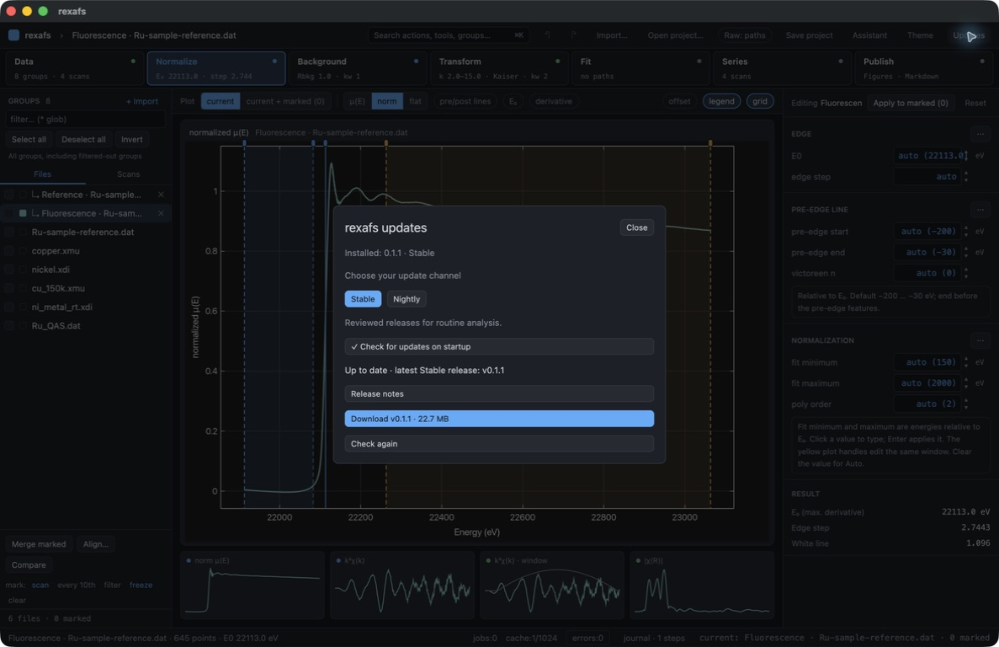
Download starts without blocking the project window; the updater shows SHA-256 verification in progress.
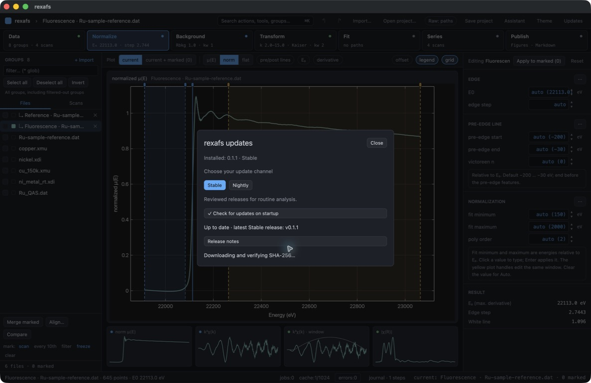
The official ARM Mac ZIP downloaded successfully and passed size and SHA-256 verification. Installation remains a separate explicit action.
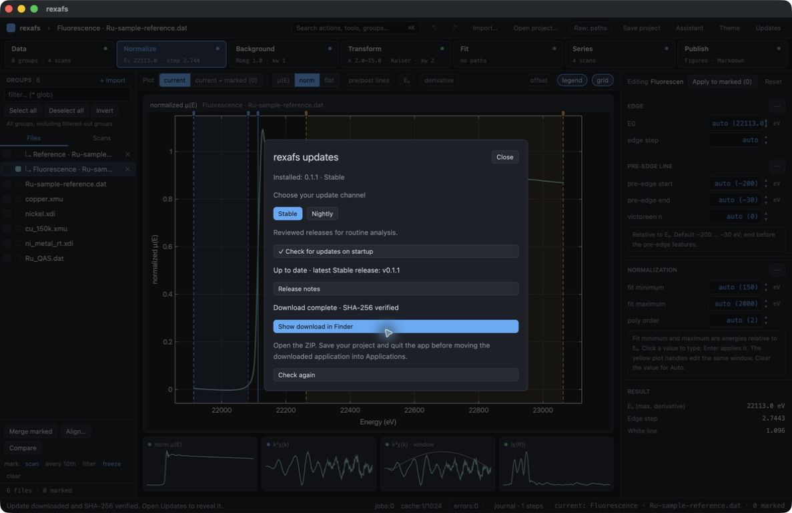
Show download in Finder reveals the verified 22.7 MB ARM ZIP. Finder is shown in list view to keep the capture scoped to the release folder.
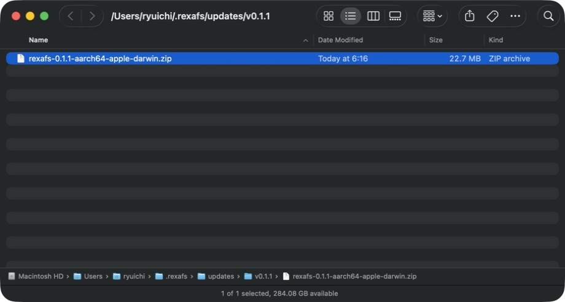
Nightly is an explicit update-channel choice. Before the first nightly publication, the app reports that none are available.
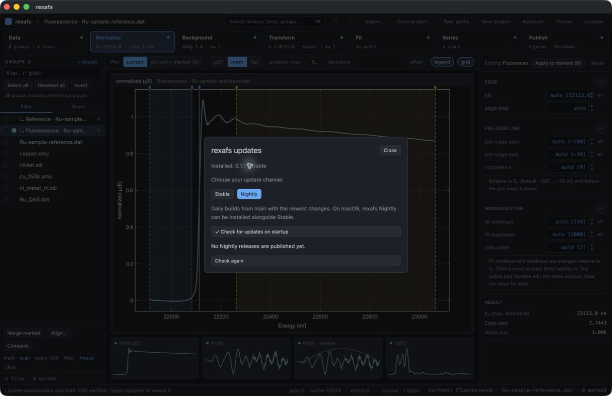
Startup checks can be disabled while retaining Nightly as the saved preference.
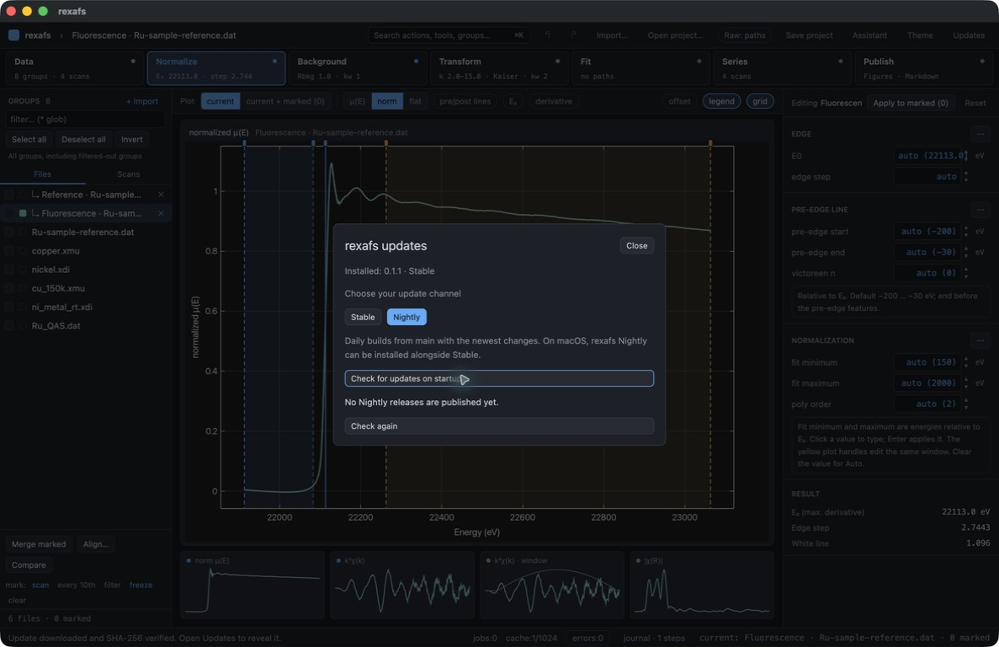
Intermediate defect: clicking behind the update overlay marked a spectrum. Fixed by occluding pointer input and moving keyboard focus into the dialog; see the later corrected check.
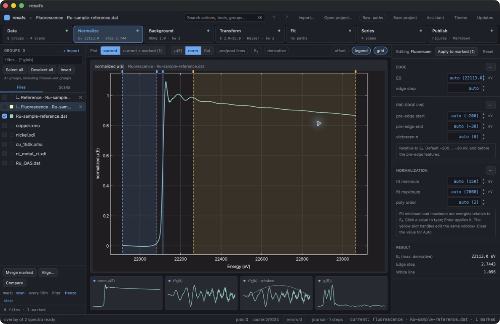
After restarting, Nightly remains selected and startup checks remain disabled. Opening Updates performs a manual check.
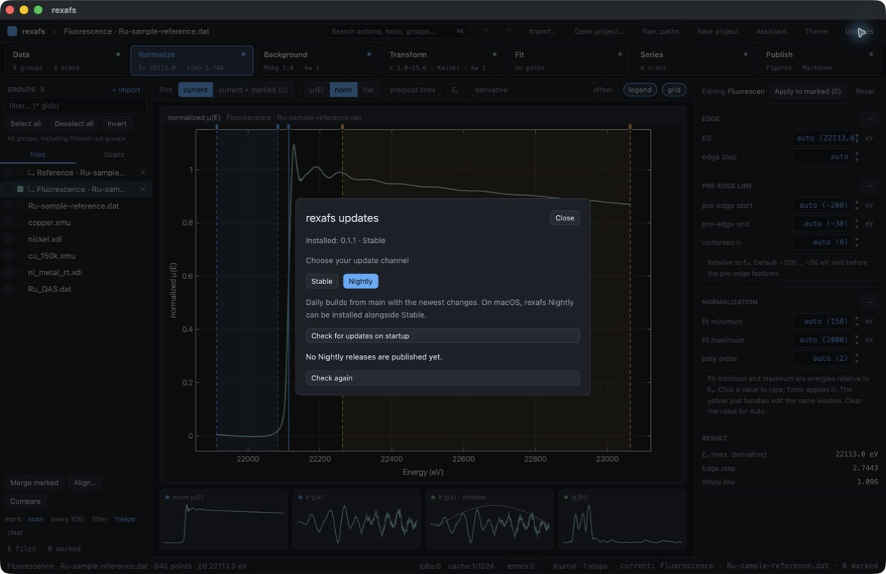
Corrected dialog blocks clicks and Cmd+A/Cmd+5 from reaching the project. Escape closes it; the original stage and zero marks are unchanged.
Intermediate defect: the command palette did not reopen after closing Updates because the dialog retained keyboard focus. Corrected by restoring focus to the app root; see the following checks.
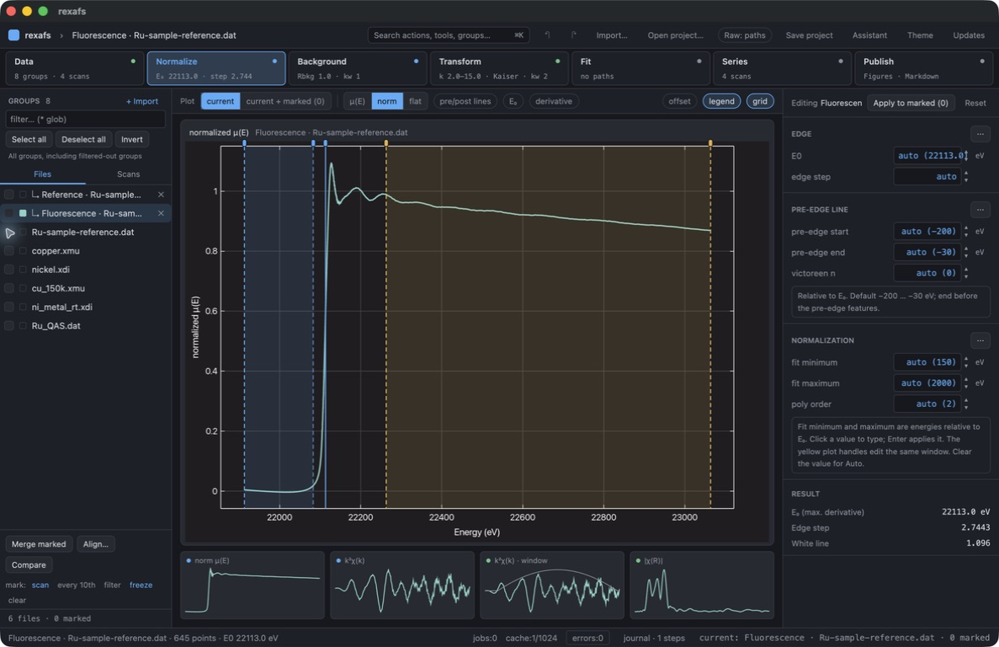
The root now has initial keyboard focus; Cmd+K finds the Stable/Nightly update command.
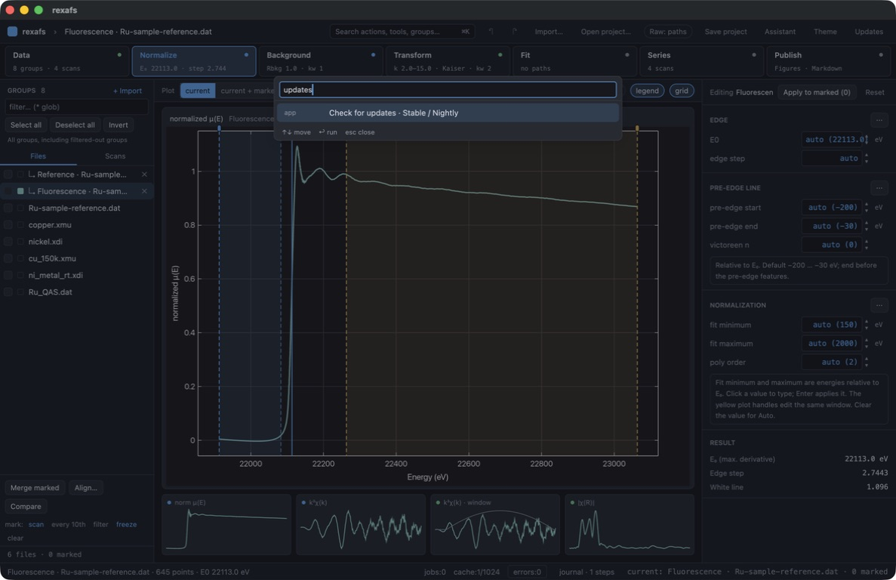
Selecting the palette command opens Updates and transfers focus to the dialog.
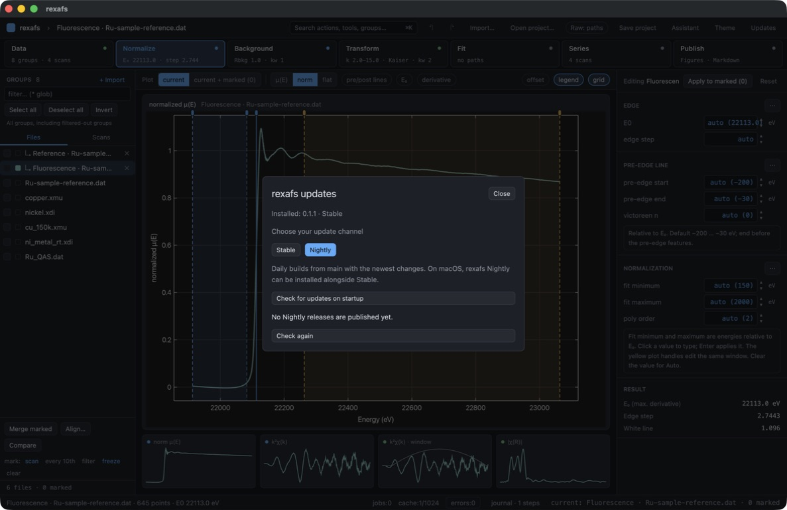
After closing Updates with Escape, Cmd+K works again. Underlying stage and group marks remain unchanged.
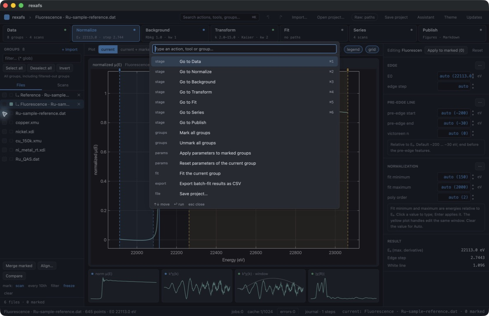
The active Nightly QA build displays its build tag and offers the Stable release when the user explicitly switches channels. This QA build is not published.
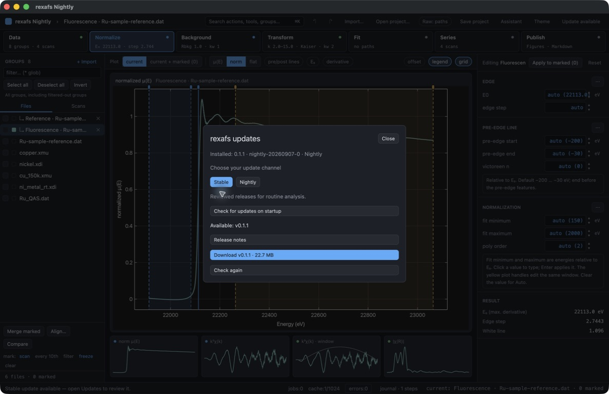
Nightly title and application brand stay visible outside the updater. The normal project and controls remain usable.
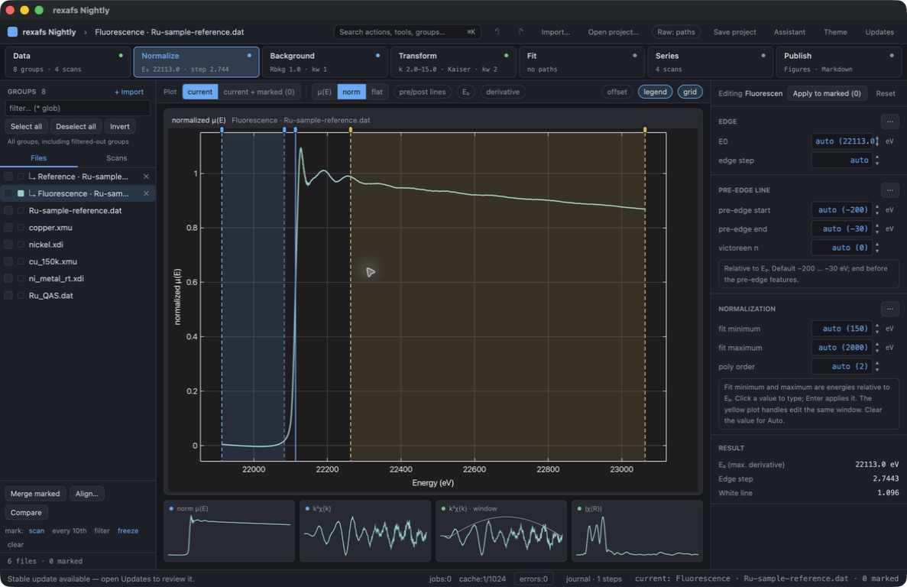